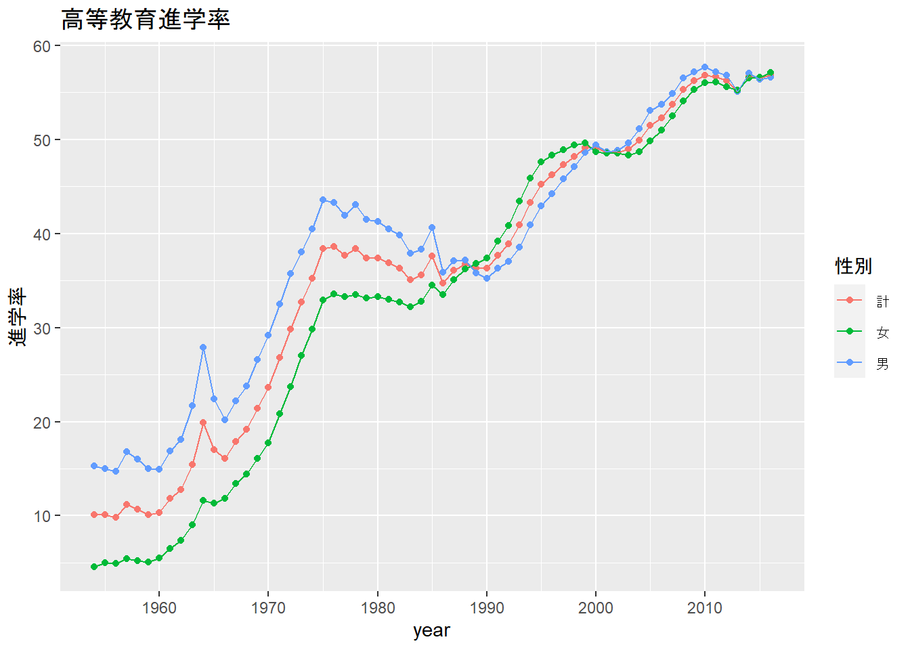
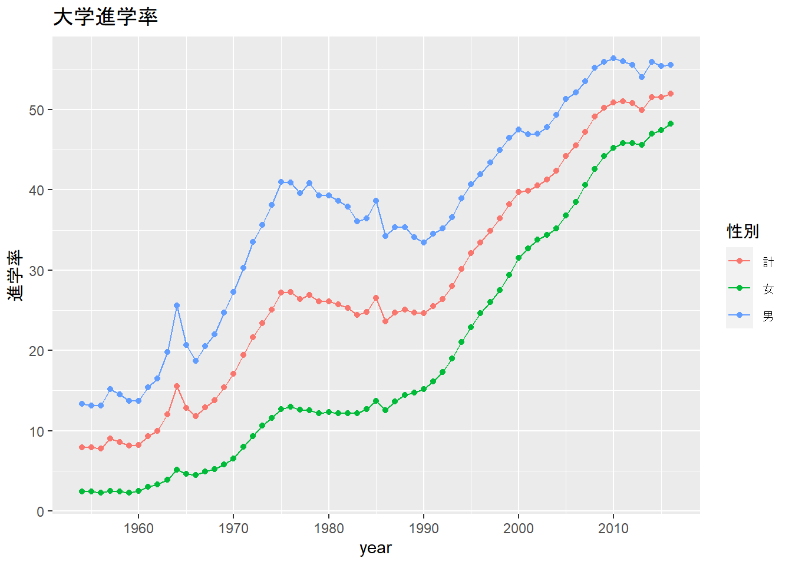

政府統計を提供しているestatのapi機能をRで使えるようにしたパッケージ
参考
クソみたいなexcelファイルをいちいち持ってこなくてもオッケーになる（はず…）
まずはestatに利用者登録をして，アプリIDを取得する必要がある
アプリIDは何度も入力する必要があるので代入しておく
欲しい統計情報をキーワードで検索できる（ただ楽ではないのでestatのホームページから検索する方が無難かも）
今回は大学進学率を探してみる
#キーワードを含む統計情報を表示：estat_getStatsListコマンド
estat_getStatsList(appId = appid,
searchWord = "進学率") %>%
DT::datatable()先ほどの検索で得られたものからさらに絞り込む
今回は学校基本調査の年次統計（一番上のやつ）を使用する
データセットの指定には一番左の列の@idが使われるので控えておく
今回使うIDは0003147040
ちなみにメタデータはリスト形式で返ってくる
# 統計情報のリストから欲しいデータセットのidを次に記入
meta <- estat_getMetaInfo(appId = appid, statsDataId = '0003147040')
meta$tab
# A tibble: 1 x 4
`@code` `@name` `@level` `@unit`
<chr> <chr> <chr> <chr>
1 0000000820 進学率 "" ％
$cat01
# A tibble: 3 x 3
`@code` `@name` `@level`
<chr> <chr> <chr>
1 0000000010 計 1
2 0000000020 男 1
3 0000000030 女 1
$cat02
# A tibble: 9 x 3
`@code` `@name` `@level`
<chr> <chr> <chr>
1 0000000010 幼稚園就園率 1
2 0000000090 幼保連携型認定こども園就園率 1
3 0000000020 高等学校等への進学率 1
4 0000000030 高等学校等への進学率-うち高等学校の通信制課程（本科）への進学者を除く~ 1
5 0000000040 大学・短期大学等への現役進学率 1
6 0000000050 大学・短期大学等への現役進学率-うち大学・短期大学の通信教育部への進学者を除く~ 1
7 0000000060 大学（学部）・短期大学（本科）への進学率 （過年度高卒者等を含む）~ 1
8 0000000070 大学（学部）への進学率（過年度高卒者等を含む） 1
9 0000000080 短期大学（本科）への進学率（過年度高卒者等を含む） 1
$area
# A tibble: 1 x 3
`@code` `@name` `@level`
<chr> <chr> <chr>
1 00000 全国 1
$time
# A tibble: 69 x 3
`@code` `@name` `@level`
<chr> <chr> <chr>
1 2016000000 2016年 1
2 2015000000 2015年 1
3 2014000000 2014年 1
4 2013000000 2013年 1
5 2012000000 2012年 1
6 2011000000 2011年 1
7 2010000000 2010年 1
8 2009000000 2009年 1
9 2008000000 2008年 1
10 2007000000 2007年 1
# ... with 59 more rows
$.names
# A tibble: 5 x 2
id name
<chr> <chr>
1 tab 表章項目
2 cat01 性別
3 cat02 学校種別（年次統計 進学率）
4 area 都道府県別
5 time 時間軸（年次） 先ほどのメタデータをもとに欲しい情報を取得する
欲しい情報を「‘cd’ + meta_infoのリスト名 = ID」の形で指定する
今回は高等教育進学率と大学進学率を取得するので，「大学（学部）・短期大学（本科）への進学率 （過年度高卒者等を含む）」と 「大学（学部）への進学率（過年度高卒者等を含む）」を選択する
data <- estat_getStatsData(appId = appid,
statsDataId = '0003147040',
cdCat02 = c('0000000060', '0000000070'))
data %>% DT::datatable()df <-
data %>%
transmute(year = parse_number(`時間軸（年次）`),
性別,
進学率 = value,
区分 = `学校種別（年次統計 進学率）`)
df %>% filter(., 性別 == '計') %>% DT::datatable()df %>%
filter(区分 == '大学（学部）・短期大学（本科）への進学率 （過年度高卒者等を含む）') %>%
ggplot(aes(year, 進学率, color = 性別))+
geom_point()+
geom_line()+
scale_x_continuous(breaks = seq(1950, 2020, 10))+
labs(title = '高等教育進学率') 
df %>%
filter(区分 == '大学（学部）への進学率（過年度高卒者等を含む）') %>%
ggplot(aes(year, 進学率, color = 性別))+
geom_point()+
geom_line()+
scale_x_continuous(breaks = seq(1950, 2020, 10))+
labs(title = '大学進学率') 